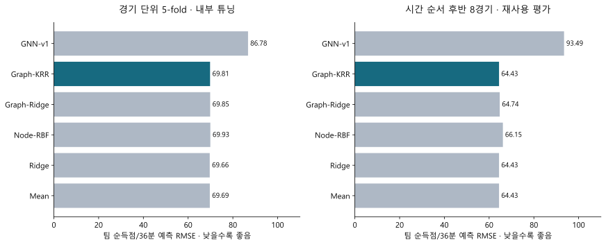
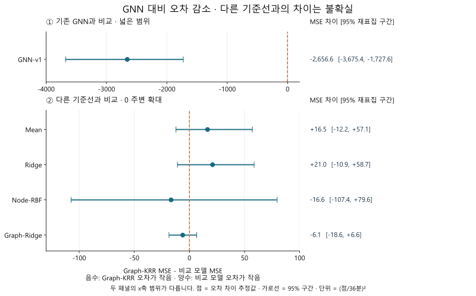
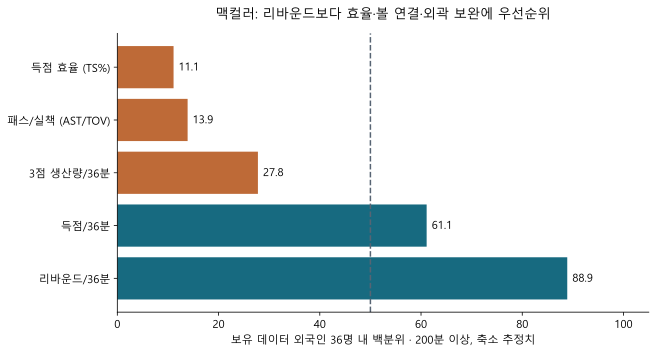
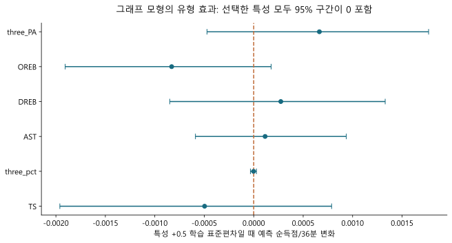
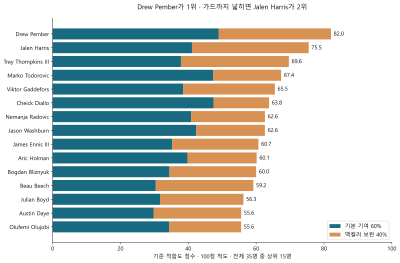
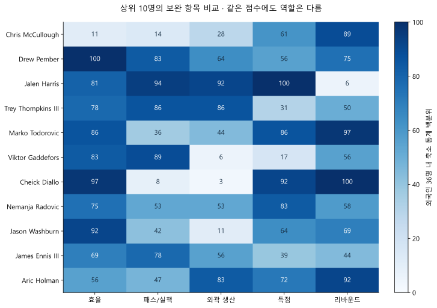
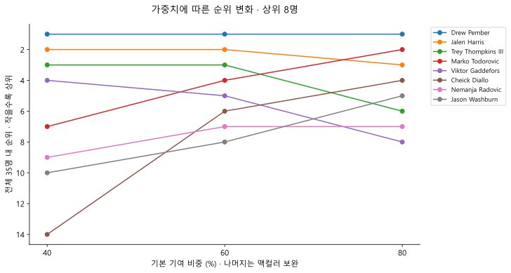

그래프 커널 회귀는 기존 GNN보다 안정적이었습니다. 그러나 단순 평균·회귀보다 우수한 궁합 예측은 확인되지 않았습니다. 선수 유형은 관측 통계에 근거한 스카우팅 가설로 제시합니다.
분석·계약 확인 기준일 2026-10-10 · TPBL 2025–26 자료 · 서울 삼성 썬더스
24경기정제한 385구간 · 595.2분
19.6% ↓기존 GNN 대비 교차검증 팀 RMSE
35명계약 제한 없는 영입 검토 순위
01 · GNN 대안: 속성 그래프 커널 회귀
Graph-KRR은 선수 노드의 경기 전 특성과 아군·상대 관계를 고정 길이 그래프 표현으로 바꾼 뒤, 그래프 간 유사도를 이용해 순득점과 맥컬러 득점을 예측합니다. 중심성·커뮤니티 탐지·클러스터링은 사용하지 않았습니다.

동일 정제 데이터·경기 단위 분할에서 비교. 단위는 점/36분이며 RMSE가 작을수록 좋습니다. · PNG / SVG · 작은 화면에서는 그래프를 좌우로 스크롤하세요
팀 순득점 RMSE는 교차검증에서 86.78 → 69.81, 시간 순서 평가에서 93.49 → 64.43으로 개선됐습니다. 다만 교차검증 평균 기준선은 69.69, Ridge는 69.66으로 Graph-KRR보다 소폭 좋았습니다. 기존 GNN은 기존 하이퍼파라미터를 유지한 3개 시드 평균이며, 새 커널 모형처럼 재튜닝하지 않았습니다. 개선율은 이 기존 구현과의 비교이며 모든 GNN보다 우수하다는 뜻은 아닙니다.

넓은 범위의 GNN 비교와 0 주변의 기준선 비교를 분리했습니다. 경기 단위 2,000회 짝지은 부트스트랩의 95% 구간이며, 아래 패널의 모든 구간은 0을 포함합니다. 고정된 외부 예측의 오차 차이로 재학습 불확실성 전체는 포함하지 않습니다. · PNG / SVG · 작은 화면에서는 그래프를 좌우로 스크롤하세요
발표에서 사용할 결론: “소표본에서 기존 GNN의 불안정성을 줄였지만, 그래프 관계 정보를 추가한 예측 이득은 입증하지 못했다.” 시간 순서 후반 8경기는 이전 분석에서도 사용한 구간으로, 새 시즌의 독립 검증 결과가 아닙니다.
모든 모델의 결과 보기
평가
모델
팀 RMSE
맥컬러 RMSE
group_nested
GNN-v1
86.776
33.853
group_nested
Graph-KRR
69.810
29.520
group_nested
Graph-Ridge
69.854
29.497
group_nested
Mean
69.692
29.638
group_nested
Node-RBF
69.929
29.780
group_nested
Ridge
69.660
29.629
temporal_frozen
GNN-v1
93.487
34.599
temporal_frozen
Graph-KRR
64.430
29.908
temporal_frozen
Graph-Ridge
64.744
29.798
temporal_frozen
Mean
64.428
29.910
temporal_frozen
Node-RBF
66.150
30.052
temporal_frozen
Ridge
64.426
29.870
group_nested = 경기 단위 외부 5-fold / 내부 3-fold 튜닝. temporal_frozen = 앞 16경기 학습, 뒤 8경기 평가; 평가 특성은 첫 평가일 이전으로 동결. 보조 목표인 맥컬러 득점의 하이퍼파라미터는 팀 순득점 기준으로 선택했습니다.
02 · 우선 검토할 유형: 효율과 볼 연결을 갖춘 슈팅 빅맨
맥컬러는 보유 외국인 표본에서 리바운드 백분위가 88.9로 높습니다. 보완 우선순위는 득점 효율 → 패스/실책 관리 → 외곽 생산입니다. 리바운드를 약점으로 간주해 리바운더만 더하는 해석은 자료와 맞지 않습니다.

외국인 36명(맥컬러 포함)의 축소 추정 통계로 계산한 상대적 위치. 낮은 백분위는 해당 비교집단 내 낮은 수치를 뜻합니다. · PNG / SVG · 작은 화면에서는 그래프를 좌우로 스크롤하세요
전술 가설은 리바운드 기본 기여를 유지하면서, 외곽에서 공간을 만들고 패스로 공격을 연결하는 4–5번입니다. 3점 성공률만 보지 않고 시도량과 생산량을 함께 확인해야 합니다. 이 유형은 2·3쿼터 동시 출전에서 공간·패스 선택지를 늘리고, 1·4쿼터 교대에서도 공격 기여를 유지한다는 전술 가설입니다. 두 역할의 효과를 개별적으로 검증한 결과는 아닙니다.
내부 선별 가정은 시즌 400분 이상, 신장 198cm 이상, 축소 추정 리바운드/36분 8개 이상입니다. 이는 분석자가 정한 조건이며 KBL 자격 규정이 아닙니다. 수비 매치업·스크린·롤/팝 효율은 자료가 없어 확인하지 못했습니다.

같은 상대·상황 프로필에서 한 특성을 바꾼 모형 민감도. 100회 경기 재표집·계수 재추정 구간이며 고정 튜닝값을 사용합니다. 인과효과가 아닙니다. · PNG / SVG · 작은 화면에서는 그래프를 좌우로 스크롤하세요
GNN이 최적 유형을 학습했다고 주장할 수는 없습니다. 그래프 민감도는 거의 0이고 불확실성 구간도 0을 포함합니다. 따라서 위 유형은 통계적 보완 가설이며, 실제 궁합은 추가 경기 영상과 KBL 로테이션 데이터로 검증해야 합니다.
03 · 계약 상태를 제한하지 않은 외국인 스카우팅 순위
보유 데이터에서 맥컬러를 제외한 외국인 중 200분 이상 출전한 35명을 비교했습니다. 계약 선수와 계약 미확인 선수도 포함합니다. 은퇴 보도 선수 2명도 동일 기준으로 포함하여 전체 35명에게 영입 검토 순위를 부여했습니다. 활동 상태는 참고 정보로 표시하며 순위에서 제외하거나 감점하지 않습니다. 이 중 기존 체격·출전량·리바운드 조건을 만족하는 선수는 23명입니다.
순위는 기술·역할 적합도에 따른 스카우팅 우선순위입니다. 계약·이적료·연봉·부상 정보는 점수에 반영하지 않았습니다. 따라서 상위 선수도 즉시 영입 가능한 선수라는 의미는 아닙니다. 기존 계약 확인 결과는 기준일과 출처를 함께 표시합니다.

점수는 기본 기여와 맥컬러 대비 보완을 합친 분석자 정책입니다. GNN이나 그래프 커널이 학습한 선수 궁합 점수가 아닙니다. · PNG / SVG
전체 35명 비교표
기본 순위는 모든 포지션을 포함합니다. 빅맨 역할 조건을 켜면 23명으로 좁혀집니다. 점수 비중을 바꾸면 전체 후보의 순위를 다시 계산합니다. 검색·필터를 적용해도 순위는 해당 비중에서의 전체 35명 기준입니다.
전체 순위
선수 · 데이터 당시 소속
적합도
기본 / 보완
역할 조건
출전분
PTS / REB / AST 36분당
TS%
3점 성공/시도
기준 점수 95% 재표집 범위
계약 확인
표의 PTS/REB/AST·TS·3점은 시즌 실측 통계입니다. 적합도는 출전량을 고려해 축소한 통계의 백분위를 사용하므로, 표의 실측 값만으로 계산한 순서와 다를 수 있습니다. 재표집 범위는 기본 60/40 정책 기준이며 비중을 변경해도 그 기준 범위를 표시합니다. 데이터 당시 소속과 현재 계약 소속은 구분해야 합니다.
전체 점수에서는 Drew Pember → Jalen Harris → Trey Thompkins III → Marko Todorovic → Viktor Gaddefors 순입니다. 빅맨 역할 조건을 적용하면 Pember → Thompkins → Todorovic → Gaddefors → Cheick Diallo가 상위 5명입니다. Harris는 공격 보완형 가드이고, Gaddefors·Diallo는 종합 점수가 높아도 외곽 보완 유형과는 다릅니다. 삼성의 역할 요구를 먼저 정한 뒤 순위를 읽어야 합니다.

맥컬러와 상위 10명 동일 참조집단의 백분위 비교. 모든 지표는 높을수록 해당 통계가 높은 것이며 수비 성능을 뜻하지 않습니다. · PNG / SVG
상위 선수별 검토 근거
전체 1위 · 82.0점
Drew Pember
효율·외곽·볼 연결을 함께 갖춘 4–5번
TS 64.2%, 3점 63/195, AST 2.99/36분으로 여러 보완 항목을 함께 충족합니다. 출전량도 1,203.9분으로 후보 중 충분한 편입니다.
검토할 점: 3점 성공률은 32.3%입니다. 엘리트 슈터로 단정하기보다 시도량과 효율의 결합을 평가해야 합니다. 실제 스크린·수비 적응은 별도 확인이 필요합니다.
체격·리바운드 조건 통과 · 점수 재표집 57.8–86.8 · 순위 재표집 1.0–10.5
리그 경기 126개를 경기 단위로 500회 재표집하고, 모든 후보의 점수·순위를 다시 계산했습니다. 후보 35명과 원래 백분위 참조집단 36명을 고정했습니다. · PNG / SVG
1위 Pember도 재표집에서는 순위가 변합니다. 높은 점수는 유망한 검토 대상을 뜻하지만, 작은 점수 차이로 선수 간 우열을 확정할 수는 없습니다. 상위 5위 비율은 재표집의 안정성 지표이며 실제 성공 확률이 아닙니다.

기본 기여 비중 40/60/80%에서의 전체 35명 순위. 위 그래프는 통계 재표집 구간과 다른, 분석자 가중치 선택에 대한 민감도입니다. · PNG / SVG
삼성은 맥컬러 영입 당시 케렘 칸터 계약도 보도됐습니다(2026-08-24 보도). 따라서 실제 영입은 교체 또는 향후 시즌 구상과 연결됩니다. 칸터의 동일 기준 자료가 없어 현 선수보다 낫다는 교체 결론은 내리지 않았습니다.
04 · 적합도 점수는 어떻게 계산했는가
그래프 모형에서 후보 교체 효과가 거의 0으로 수렴했으므로, 그 미세한 예측 차이를 정밀한 순위로 확대하지 않았습니다. 선수 추천에는 맥컬러의 관측 프로필을 보완하는 투명한 정책을 적용했습니다. 모델 성능 검증과 실제 스카우팅 점수는 서로 다른 결과입니다.
적합도 S = 0.60 × 기본 기여 Q + 0.40 × 보완 C Q = 0.35 × 효율 + 0.20 × 득점 + 0.25 × 리바운드 + 0.20 × 패스/실책 각 항목은 동일 참조집단 내 백분위이며 Q·C·S를 0–100점 척도로 표시합니다.
기본 기여 Q
효율은 TS%, 득점은 36분당 득점, 리바운드는 공격+수비 리바운드/36분, 볼 연결은 축소 AST/TOV입니다. 출전량이 적은 선수의 극단적인 통계를 줄이기 위해 리그 사전값으로 축소했습니다. 기본 기여를 60% 둔 것은 공격 보완뿐 아니라 독립적으로 경기에 기여할 능력도 평가하려는 분석자의 선택입니다. 승률을 최대화하도록 학습한 비중은 아닙니다.
보완 C
맥컬러가 표본 중위값(50백분위)에 못 미친 세 항목을 사용했습니다. 효율 11.1백분위, 볼 연결 13.9, 외곽 생산 27.8이므로 50까지 부족한 정도를 정규화해 효율 40.0%·볼 연결 37.1%·외곽 생산 22.9%를 얻었습니다. 후보가 맥컬러보다 높은 부분만 기여하고, 각 항목의 가능한 최대 개선 폭으로 정규화했습니다.
높은 보완 점수가 모든 항목의 강점을 보장하지는 않습니다. 효율·패스가 좋은 선수도 외곽이 약할 수 있으므로 항목별 프로필과 선수 카드의 제한점을 함께 확인해야 합니다. 리바운드가 이미 강점인 맥컬러의 보완 C에는 리바운드를 넣지 않고 기본 기여 Q에서 유지했습니다.
참조집단과 선별 조건
백분위는 맥컬러를 포함한 외국인 36명(200분 이상)으로 고정합니다. 보고서의 후보 35명은 이 집단에서 맥컬러만 제외한 수입니다. 은퇴 보도 선수도 다른 선수와 같은 점수·순위 계산에 포함합니다. 포지션이나 계약으로 화면을 필터링해도 백분위를 다시 계산하지 않습니다.
기존 역할 조건인 400분 이상·198cm 이상·축소 REB/36분 8 이상은 현재 선택 필터입니다. 포지션 적합성을 직접 학습한 기준이 아니고, 신장과 리바운드로 수비력을 보장하지도 않습니다. 표본 200–399분 선수는 순위에 포함하되 출전량과 재표집 변동을 함께 확인합니다.
선수 유형을 더 정확히 표현하면 “리바운드 기본 기여를 갖춘 효율·볼 연결형 빅맨, 그중 외곽 생산이 검증된 선수 우선”입니다. 이 요구에는 Pember·Thompkins가 여러 항목을 함께 충족하고, Todorovic은 공격형 센터, Beech는 외곽 특화형으로 검토할 수 있습니다. Gaddefors·Diallo처럼 다른 강점으로 점수가 높은 선수는 다른 전술 시나리오로 읽어야 합니다.
발표에서 구분할 네 가지 주장
관측 사실: 맥컬러는 해당 표본에서 리바운드가 높고 효율·볼 연결·외곽 생산이 상대적으로 낮습니다.
전술 가설: 효율·패스·외곽을 보완하는 파트너가 삼성의 공격 선택지를 넓힐 수 있습니다.
모델 검증: 기존 GNN보다 Graph-KRR 오차가 작지만 단순 기준선 대비 추가 예측 이득은 부족합니다.
스카우팅 정책: 가설을 점수로 명시해 35명의 검토 순서를 만들었습니다. 실제 궁합·승률·계약 가능성을 검증한 순서는 아닙니다.
06 · 재현 가능한 검증 설계와 적용 한계
1. 정제 30초 이상·비가비지 정규시즌 코트 밖 선수 이벤트가 있는 16구간 제외
2. 경기 전 정보 같은 날·이후 기록 제외 노드 스케일은 학습 구간으로 추정
3. 그래프 표현 10명 노드 × 19특성 아군/상대 쌍 관계를 197차원으로 집계
4. 커널 회귀 RBF 유사도 + 가중 ridge 경기 단위 분리와 내부 튜닝
기본 61차원은 역할별 특성 평균 57개와 상황 특성 4개입니다. 맥컬러–동료 상호작용 64개, 동료 간 상호작용 64개, 아군–상대 차이 8개를 더해 197차원 표현을 만듭니다. 관계 종류가 고정된 완전 그래프이므로 변화하는 정보는 주로 선수 속성입니다. 노드만 사용하는 Node-RBF와 비교해 관계 표현의 추가 이득을 검증했습니다.
커널은 k(G,H)=exp(−‖φ(G)−φ(H)‖²/(2σ²d)) 형태입니다. 실제 구현의 거리 정규화와 가중 중심화는 strengthen.py가 기준입니다. λ와 커널 폭은 내부 경기 교차검증으로 선택합니다. 특정 논문의 구현을 그대로 복제한 것이 아닌, 속성 그래프 표현과 표준 커널 회귀를 결합한 맞춤 모형입니다. 관련 원리는 연속 속성 그래프 커널 연구를 참고할 수 있습니다.
리그 전이의 핵심 제약: 2026–27 KBL은 외국인 2명 보유, 2·3쿼터 최대 2명 동시 출전, 1·4쿼터 1명 출전으로 변경됐습니다(KBL 이사회 결정 보도, 시즌 개막 시점 재확인). 동시 출전 궁합이 이번 시즌에는 실제 전술 질문입니다. 다만 리그·국내 동료·쿼터·경기 속도가 달라 TPBL 성과를 삼성 성과로 그대로 옮길 수 없습니다. 보유 팀의 정제된 정규시즌 자료 중 외국인 1명 구간은 3개·4.75분에 불과합니다. 따라서 두 외국인 동시 출전 맥락의 학습에 비해, 1·4쿼터에 필요한 외국인 1명 운용 성능을 직접 학습할 근거는 특히 부족합니다.
후보 교체 실험은 384개의 공통 상황에서 동일한 상대 속성 프로필을 사용합니다. 상대 프로필은 익명화된 비교 맥락이며 후보와 실제 맞대결한 기록을 뜻하지 않습니다. 전체 시즌 통계로 만든 사후 실험으로, 신규 선수의 미래 성적 검증이 아닙니다. 커널의 강한 정규화로 차이가 거의 사라진 결과를 유의미한 궁합 순위로 해석하지 않았습니다.
데이터·불확실성 및 검증 체크
선수별 분당 기록은 200분, 3점 성공률은 50시도, TS는 분모 100의 리그 사전값으로 축소합니다.
경기 단위 분할로 같은 경기 구간이 학습·평가에 섞이지 않도록 했습니다. 교차검증은 사후 평가입니다. 무작위 경기 fold에서는 평가 경기의 박스스코어가 그 이후 학습 경기의 사전 누적 통계에 반영될 수 있으므로 완전히 독립된 미래 예측 검증으로 해석하지 않습니다. 시간 순서 분할에서는 학습일이 모두 평가일보다 앞서고 평가 특성을 동결하여 이 경로를 막았습니다. 실전 예측 해석은 시간 평가를 우선합니다.
미래 기록을 100배 바꾸어도 해당 경기 전 특성 변화는 0. 노드 순서 변경 시 표현 차이는 1.8e−15. 검사한 커널 행렬의 최소 고윳값은 양수입니다.
동일 날짜 통계 제외·학습 노드 스케일링으로 기존 정보 누출 위험을 줄였습니다. 정제 CSV에서 재구성했으며 원시 API 응답까지의 감사를 완료한 것은 아닙니다.
24경기에서 나온 385구간은 독립 표본 385개가 아닙니다. 짧은 구간의 36분 환산 목표가 매우 변동적입니다. 인과적 선수 효과·삼성 승률·계약 가능 확률은 추정하지 않습니다.
조건부 스카우팅 풀은 보유 TPBL 선수에 한정됩니다. 전 세계 외국인 선수의 전수 탐색·다른 리그 성적 수집·연봉 협상·메디컬·등록 적격성 확인은 이번 데이터로 완료되지 않았습니다.